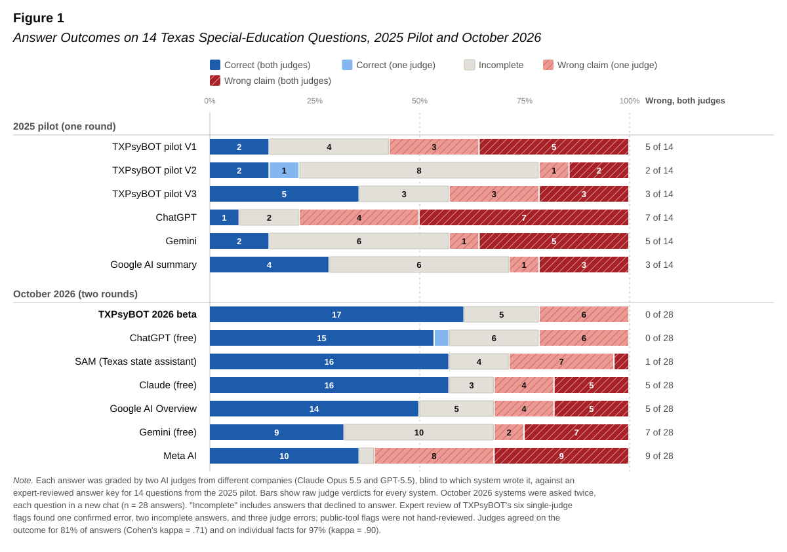
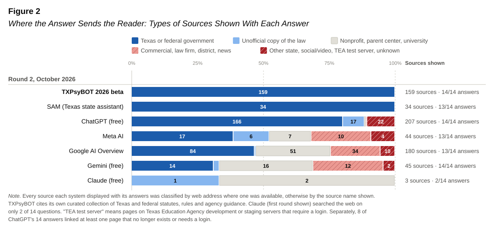

TXPsyBOT is an AI assistant for Texas school psychologists and trainees. Ask a special-education or practice question in plain language. It answers only from a curated knowledge base of 180+ Texas and federal sources (Texas Education Code, 19 TAC, IDEA, TEA guidance, licensing rules), cites the section it relied on, and says “not covered” instead of guessing.
Status: beta, under evaluation with practitioners and trainees.
100%of TXPsyBOT’s 159 sources were Texas or federal statutes, rules, or agency documents (SAM also 100%; Google 47%, Gemini 31%).
8 of 14ChatGPT answers linked at least one page that no longer exists or requires a login.
0 of 28TXPsyBOT answers both judges called wrong (ChatGPT 0, SAM 1, Claude 5, Google 5, Gemini 7, Meta 9).
17 of 28TXPsyBOT answers both judges called correct.


Where public AI sent readers
Round 2 answers, out of 14 per tool. An answer counts once per row even if it showed several such sources.
| Answers that… | TXPsyBOT | ChatGPT | Gemini | Meta | SAM | Claude | |
|---|---|---|---|---|---|---|---|
| Linked a page that is gone or needs a login | 0 | 8 | 0 | 1 | 0 | 1 | 0 |
| Cited another state’s guidance | 0 | 2 | 2 | 1 | 2 | 0 | 0 |
| Cited a law-firm or commercial site | 0 | 0 | 9 | 7 | 5 | 0 | 0 |
| Cited social media or video | 0 | 0 | 0 | 4 | 0 | 0 | 0 |
| Showed any source | 14 | 14 | 14 | 13 | 13 | 13 | 2 |